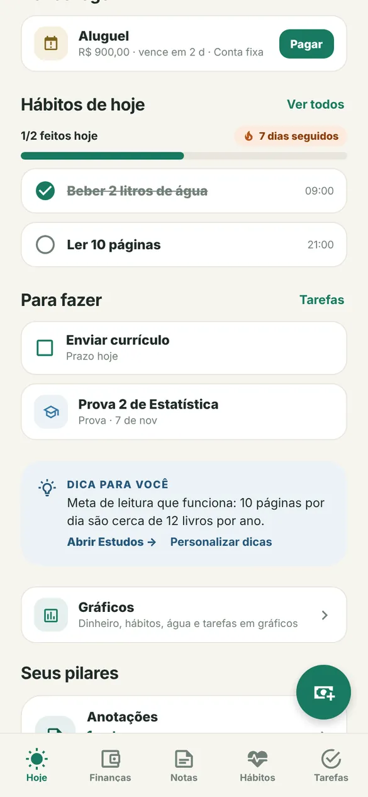
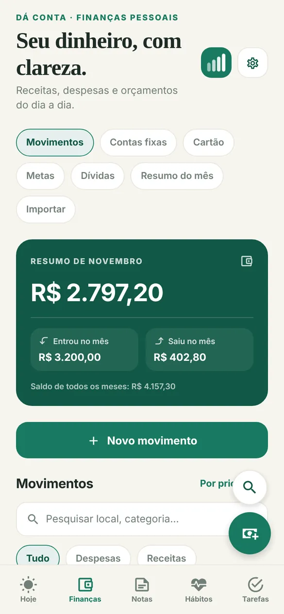
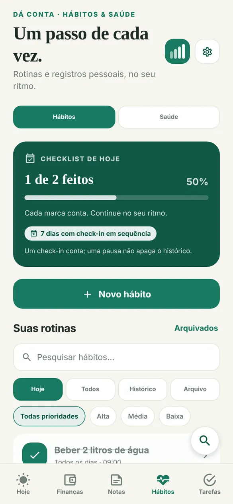
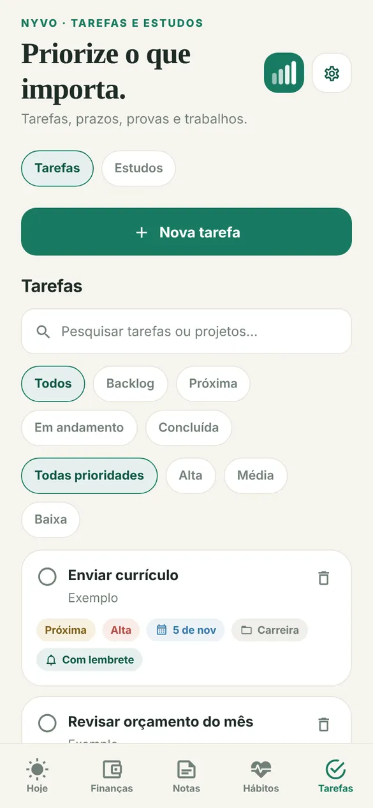
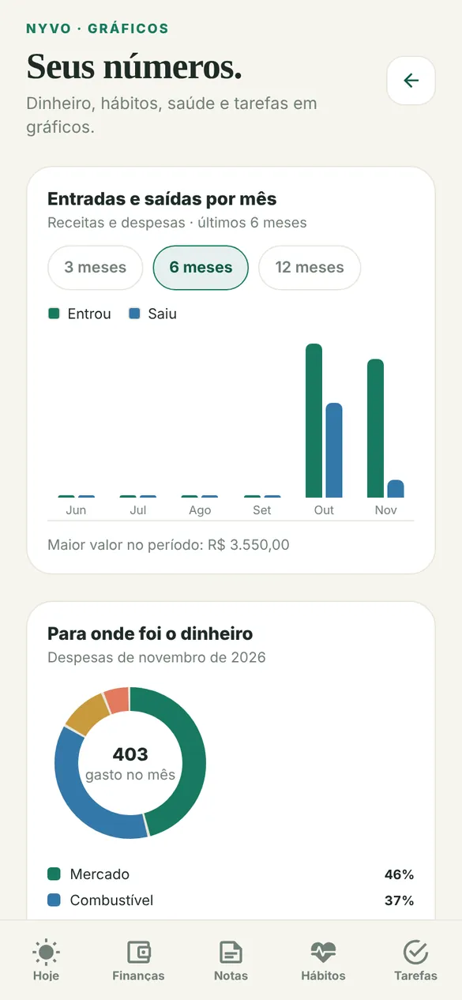

Sua vida inteira, organizada sem esforço
Cada parte funciona sozinha, mas todas aparecem juntas na tela Hoje. Você escolhe o que quer acompanhar.
Dinheiro
Gastos e receitas por categoria, saldo do mês, contas fixas, cartão, metas e dívidas — tudo em gráficos claros.
Contas a vencer
Avisos no dia e no horário que você escolher. Nunca mais pague juro por esquecer um boleto.
Hábitos e saúde
Rotinas com lembrete, água, treino e leitura. Acompanhe a sua sequência e não quebre a corrente.
Estudos
Matérias, provas e trabalhos com data, e Pomodoro para estudar em blocos de foco de verdade.
Tarefas
Prioridades e prazos sem app separado. O que importa hoje aparece primeiro, o resto espera a vez.
Gráficos
Para onde foi o dinheiro e como andam seus hábitos — numa olhada, sem planilha e sem complicação.
O que você encontra lá dentro
Telas reais do Dá Conta com dados de exemplo. Simples de usar desde o primeiro minuto.





Três passos e o Dá Conta cuida do resto
Diga o que quer organizar
Dinheiro, estudos, hábitos ou tarefas. A tela inicial muda conforme a sua escolha.
Escreva do jeito que fala
“Gastei 45 no mercado” ou “beber água”. O Dá Conta entende e guarda no lugar certo.
Deixe ele lembrar por você
Avisos de contas, provas e hábitos no horário que você escolher. Você só vive a sua vida.
Seus dados continuam seus
O Dá Conta foi feito para organizar a sua vida, não para vender anúncios nem seus dados.
- Sem conta, tudo fica no seu aparelhoNada sai do celular ou do navegador.
- Com conta grátis, sincronizaUse no celular e no notebook e não perca nada ao trocar de aparelho.
- Nunca pedimos CPF, cartão ou senha do bancoVocê digita só o que quiser acompanhar.
- Você pode copiar ou apagar tudoBackup e exclusão em Configurações, conforme a LGPD.
Calculadoras que resolvem na hora
Sem instalar nada, direto no navegador — com as tabelas de 2026.
Aprenda a organizar, mesmo começando do zero
O que todo mundo pergunta antes de começar
O Dá Conta é grátis?
Sim. O Dá Conta é gratuito e não tem anúncios. Você pode usar todas as funções sem pagar nada.
Vai ter versão paga?
Estamos preparando o Dá Conta Pro, com relatórios avançados e mais personalização. Ainda não está à venda e nada é cobrado. O que você usa hoje continua grátis, e dá para pedir aviso do lançamento no app, em Configurações › Ajuda.
Preciso criar conta para usar?
Não. Sem conta, seus dados ficam salvos só no seu aparelho. Se quiser usar no celular e no computador ao mesmo tempo, ou não perder nada ao trocar de celular, crie uma conta grátis com e-mail e senha.
O Dá Conta substitui a planilha de gastos?
Para a maioria das pessoas, sim. Você registra gastos e receitas, separa por categoria, acompanha o saldo do mês, contas fixas, fatura do cartão, metas e dívidas, e vê tudo em gráficos. Também dá para importar o extrato do banco em OFX ou CSV.
O app avisa quando uma conta vai vencer?
Sim. Você escolhe quantos dias antes e em que horário quer o aviso. O mesmo vale para provas, tarefas com prazo e hábitos.
Serve para estudante organizar provas e trabalhos?
Serve. Em Tarefas e Estudos você cadastra matérias, provas, trabalhos e leituras com data, e usa o Pomodoro para estudar em blocos de foco.
Tem app para Android ou iPhone?
O Dá Conta funciona no navegador de qualquer celular e pode ser adicionado à tela inicial como um app. A versão para Android na Play Store está a caminho.
Comece hoje. De graça.
Abre no navegador do celular ou do computador. Para usar como app, toque em “Adicionar à tela inicial”.
Abrir o Dá Conta